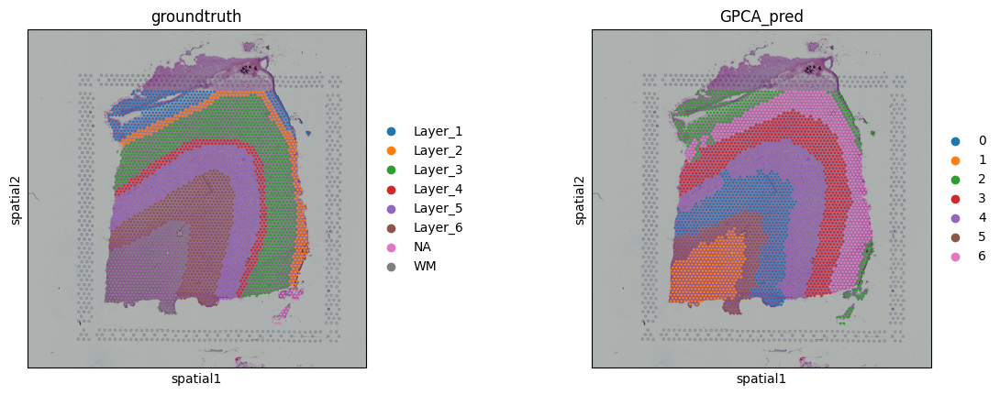
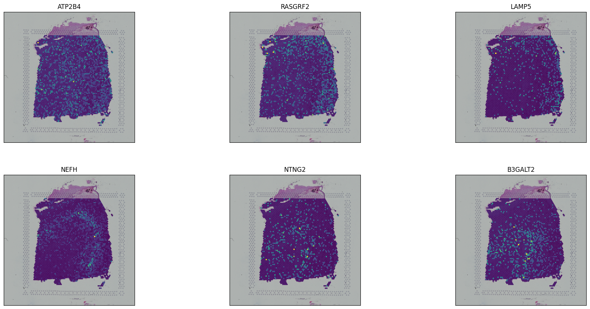
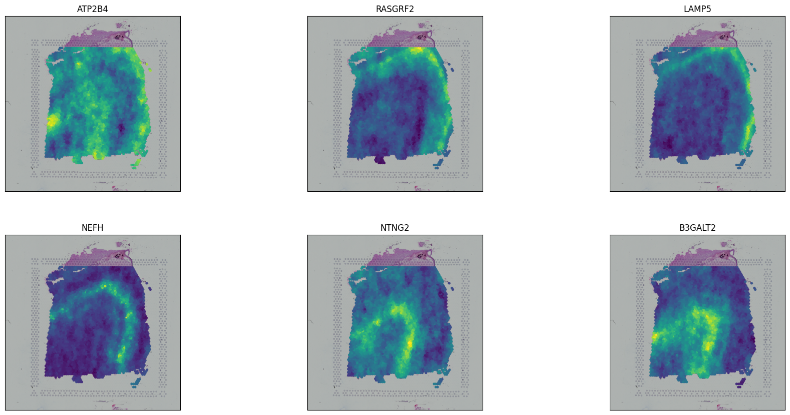
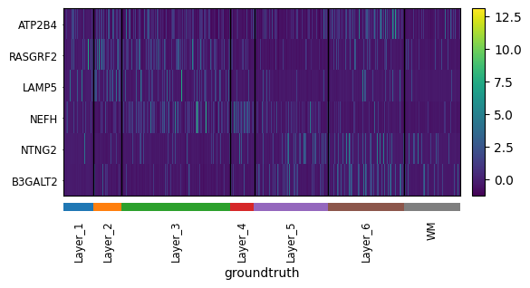
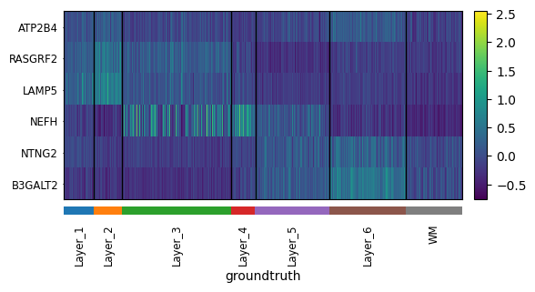
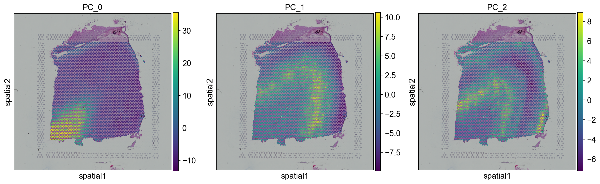
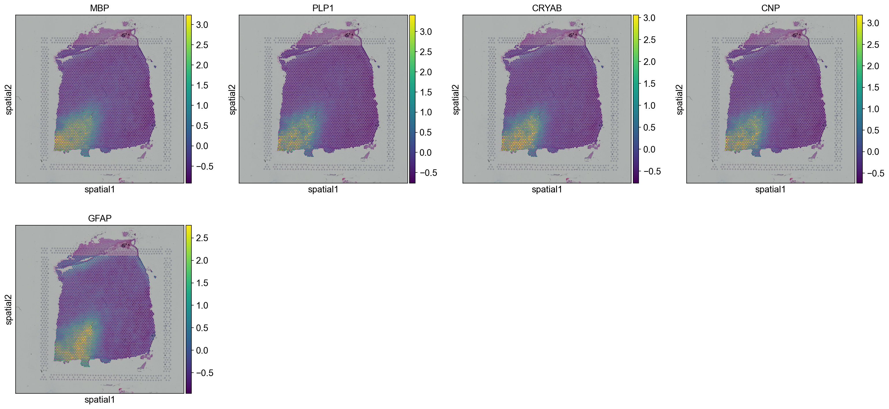

Tutorial 1: 10X Visium dataset (DLPFC)
Here, we use sample id 151673 from DLPFC dataset to demostrate the performance of GraphPCA. can be downloaded from their original study spatialLIBD(https://research.libd.org/spatialLIBD/index.html).
Load packages
[1]:
import GraphPCA as sg
import scanpy as sc
import anndata as ad
import numpy as np
import pandas as pd
import squidpy as sq
from sklearn.cluster import KMeans
from sklearn.metrics import pairwise_distances as pair
from sklearn.metrics import adjusted_rand_score as ari_score
Setting parameters
[2]:
samples = ["151507", "151508", "151509", "151510", "151669", "151670",
"151671", "151672", "151673", "151674", "151675", "151676"]
BestK=[7,7,7,7,5,5,5,5,7,7,7,7]
data_path = "../../data/DLPFC/"
save_path = "../../results/DLPFC/"
path_GT = "../../data/DLPFC/groundtruth/SpatialDE_clustering/cluster_labels_"
sample_id = 8
PCA_components = 50
Preprocessing
Before performing GraphPCA, we assumed that the gene expression counts have already been preprocessed with analytic Pearson residuals proposed by Lause et al. and further scaled for each gene to have 0 mean and unit standard deviation. Then, we selected the top 3,000 spatial variable genes using SPARK package.
[3]:
adata = sc.read(data_path + samples[sample_id] + "/sample_data.h5ad")
sc.pp.filter_genes(adata,min_cells=20)
sc.experimental.pp.normalize_pearson_residuals(adata)
sc.pp.scale(adata)
SVG_list = pd.read_csv("../../results/DLPFC/SpatialPCA_data_preprocess/" + samples[sample_id] + "_SVGs.csv",index_col=0)
adata = adata[:,adata.var.gene_ids.isin(SVG_list.x)]
Perform GraphPCA
[4]:
groundtruth=pd.read_csv(path_GT+samples[sample_id]+".csv", sep=",",header=0,na_filter=False,index_col=0)
groundtruth=np.array(groundtruth["ground_truth"])
adata.obs["groundtruth"] = groundtruth
x_array=adata.obs["array_row"].tolist()
y_array=adata.obs["array_col"].tolist()
location=np.array([x_array, y_array]).T.astype(np.float32)
Z,W = sg.Run_GPCA(adata, location=location, n_components = 50, method = "knn", platform = "Visium", _lambda =0.5,
save_reconstruction=True)
adata.obsm["GraphPCA"] = Z
print(Z.shape)
(3639, 50)
Clustering
[5]:
estimator = KMeans(n_clusters=BestK[sample_id])
res = estimator.fit(Z[:,:])
lable_pred=res.labels_
adata.obs["GPCA_pred"]= lable_pred
adata.obs["GPCA_pred"] = adata.obs["GPCA_pred"].astype('category')
refined_pred=sg.refine(sample_id=adata.obs.index.tolist(), pred=adata.obs["GPCA_pred"].tolist(), dis= pair(location), shape="hexagon")
adata.obs["GPCA_pred"]= refined_pred
adata.obs["GPCA_pred"] = adata.obs["GPCA_pred"].astype('category')
print(ari_score(adata.obs.GPCA_pred,adata.obs.groundtruth))
0.5311286908464182
Visualization
[6]:
sq.pl.spatial_scatter(adata, color=["groundtruth","GPCA_pred"])

Denosing
[7]:
adata
[7]:
AnnData object with n_obs × n_vars = 3639 × 3000
obs: 'in_tissue', 'array_row', 'array_col', 'groundtruth', 'GPCA_pred'
var: 'gene_ids', 'feature_types', 'genome', 'n_cells', 'mean', 'std'
uns: 'spatial', 'pearson_residuals_normalization', 'groundtruth_colors', 'GPCA_pred_colors'
obsm: 'spatial', 'GraphPCA'
layers: 'GraphPCA_ReX'
[8]:
sq.pl.spatial_scatter(adata,color=["ATP2B4","RASGRF2","LAMP5","NEFH","NTNG2","B3GALT2"],
ncols=3,axis_label=["",""],size=1.5,colorbar =False)

[9]:
sq.pl.spatial_scatter(adata,color=["ATP2B4","RASGRF2","LAMP5","NEFH","NTNG2","B3GALT2"],
ncols=3,axis_label=["",""],size=2,colorbar =False,layer="GraphPCA_ReX")

[10]:
adata = adata[adata.obs.groundtruth!="NA",:]
[11]:
sc.pl.heatmap(adata, var_names=["ATP2B4","RASGRF2","LAMP5","NEFH","NTNG2","B3GALT2"],
groupby='groundtruth', cmap='viridis', dendrogram=False,swap_axes=True,
figsize=(6,3))

[13]:
sc.pl.heatmap(adata, var_names=["ATP2B4","RASGRF2","LAMP5","NEFH","NTNG2","B3GALT2"],
groupby='groundtruth', cmap='viridis', dendrogram=False,swap_axes=True,
figsize=(6,3),layer="GraphPCA_ReX")

Coexpression module
[14]:
GPCA_pcs = pd.DataFrame(adata.obsm["GraphPCA"])
GPCA_pcs.index = adata.to_df().index
GPCA_pcs.columns = [ "PC_" + str(i) for i in np.arange(GPCA_pcs.shape[1]) ]
[15]:
adata.obs = pd.concat([adata.obs,GPCA_pcs],axis=1)
[16]:
sc.set_figure_params( color_map = 'viridis',figsize=(5,5))
[17]:
sq.pl.spatial_scatter(adata,color=["PC_0","PC_1","PC_2"])

[18]:
GPCA_w = pd.DataFrame(W)
GPCA_w.index = adata.to_df().columns
GPCA_w.columns = [ "PC_" + str(i) for i in np.arange(GPCA_w.shape[1]) ]
[19]:
top_5_rows = {}
for column in GPCA_w.columns:
top_5_rows[column] = GPCA_w.nlargest(5, column).index.tolist()
[20]:
sq.pl.spatial_scatter(adata,color=top_5_rows["PC_0"],layer="GraphPCA_ReX")

[ ]: